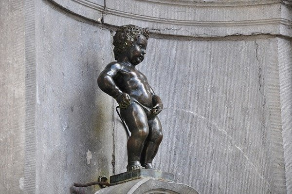
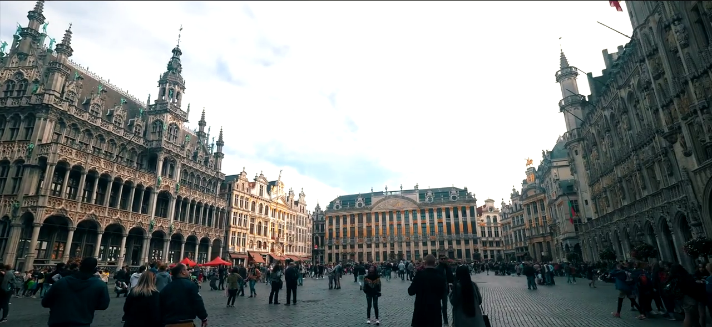
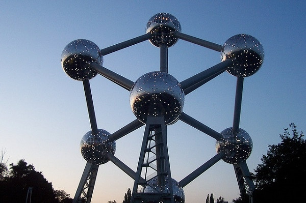
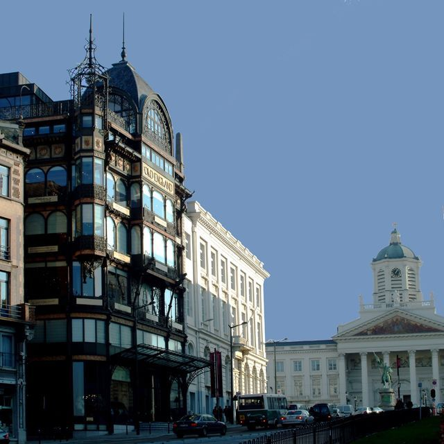

Le Manneken-Pis
visite de la gare centrale au Manneken Pis3 heures.
Il est difficile de ne pas admettre que la plupart des regards des voyageurs sont tournés vers Manneken Pis, que l’on traduit du bruxellois par « le gamin qui pisse ».
Il est à la fois un monument humoristique et historique. Cette fontaine, dans sa forme actuelle, a été érigée en 1619 et depuis ce temps, la tradition d’habiller le « gamin » a été maintenue par la communauté locale.
Ainsi, à dates fixes, la statue sera vêtue différemment. Les 883 costumes de la garde robe du petit sont exposés au Musée de la ville de Bruxelles.
Il existe une version féminine du Manneken-pis, la Jeanneke Pis, située dans l’impasse de la Fidélité tout près de la Rue des Bouchers. Découvrez ces deux statues ainsi qu’une troisième, encore moins connue.

La Grand-Place
La Grand-Place est l’un des meilleur lieux à faire à Bruxelles vous ne pourrez pas passer à côté de celle-ci.
Victor Hugo a dit une fois que c’était la plus belle place d’Europe, et il semble qu’elle le demeure encore.
Pendant les six semaines chaque année, le Palais Royal ouvre ses portes aux visiteurs. Il s’agit d’une résidence officielle du Roi Philippe de Belgique et de la famille royale, où les réunions internationales, réceptions officielles et cérémonies de l’état ont lieu. Lors de la visite du Palais Royal, il est très intéressant de découvrir la Salle du Trône, le Salon Bleu, la Salle des Miroirs et le Salon Goya.
La Grand-Place est bordée par des bâtiments du 17ème siècle, qui sont les maisons des corporations (des Boulangers, des Peintres, des Ébénistes, des Brasseurs, etc… on en compte 39 différentes), l’hôtel de Ville et la Maison du Roi (Broodhuis).

L'Atomium
L’Atomium a été construit à l’occasion de l’Exposition universelle de 1958.
Cette structure reflète une idée de l’architecture moderne parmi la vieille ville de Bruxelles. Il est le symbole du nouveau qui rencontre l’ancien.
L’Atomium est l’agrandissement d’un atome à 165 milliards de fois.
Il y a également les parc: visitez le Parc Mini-Europe. Comme son nom l’indique, vous pourrez y voir tous les grands monuments d’Europe en même temps : la Tour Eiffel, Big Ben, le Mur de Berlin, les arènes de Séville, l’Acropole, la Tour de Pise, la Basilique du Sacré-Cœur, et la liste est longue…
L’arche commémorative (arc de triomphe à trois arches que les bruxellois appellent les Arcades du Cinquantenaire) est un endroit populaire dans la ville, et généralement bondé avec les locaux et les touristes curieux. Il a été construit pour commémorer le 50ème anniversaire de l’indépendance belge.

Les Musées
Les musées royaux des Beaux-Arts de Belgique sont pour tous les fans de visites historiques. Ils sont constitués par le Musée d’Art Ancien, le Musée d’Art Moderne, le Musée Antoine Wiertz, et le Musée Constantin-Meunier.
Récemment, le musée a mis à disposition une Salle du Trésor avec toutes les pièces les plus célèbres.
Les Musées de la bière. La bière est une marque culturelle de la Belgique. De nombreuses brasseries et musées de la bière sont situés à travers le pays, et Bruxelles n’est pas une exception.
Le Musée bruxellois de la Gueuze, par exemple, présente une grande exposition montrant diverses bières et recettes anciennes. Vous pourrez même tester quelques breuvages.